Sequenzdiagramme: Die Interaktions-Sicht
Lernziele
- Verstehen, warum Sequenzdiagramme für die Modellierung von Objektinteraktionen unverzichtbar sind
- Die Notationselemente eines Sequenzdiagramms kennen und korrekt anwenden können
- Synchrone und asynchrone Nachrichten unterscheiden und einsetzen können
- Objekterzeugung, Selbstaufrufe und Objektzerstörung modellieren können
- Fragmente (alt, opt, loop) für Kontrollstrukturen verwenden können
- Den Unterschied zwischen Modellierung und Dokumentation verstehen
1. Warum brauchen wir Sequenzdiagramme?
1.1 Das Problem: Wer spricht wann mit wem?
Stellen Sie sich vor, Sie sollen einem neuen Teammitglied erklären, wie der Login-Prozess in Ihrer Anwendung funktioniert. Sie beginnen: "Der Benutzer gibt seine Daten in die UI ein, die UI ruft den Controller auf, der Controller fragt die Datenbank..." Aber schon nach wenigen Sätzen wird es unübersichtlich. In welcher Reihenfolge passiert das genau? Wer wartet auf wen? Welche Objekte sind beteiligt?
Textbeschreibungen von Objektinteraktionen sind: - Mehrdeutig und schwer nachzuvollziehen - Anfällig für Missverständnisse über die zeitliche Abfolge - Schwierig zu warten und zu aktualisieren - Ungeeignet für komplexe Interaktionen mit vielen Objekten
Das Sequenzdiagramm löst dieses Problem. Es visualisiert den dynamischen Austausch von Nachrichten (Methodenaufrufen) zwischen verschiedenen Objekten über die Zeit auf eine klare, standardisierte Weise.
1.2 Die zentrale Frage: Wer spricht wann mit wem?
Während Klassendiagramme die statische Struktur zeigen (welche Klassen existieren, welche Attribute und Methoden sie haben), zeigen Sequenzdiagramme die dynamische Sicht: Wie kommunizieren Objekte zur Laufzeit miteinander?
Klassendiagramm: - Zeigt Klassen, Attribute, Methoden - Statische Struktur - "Was existiert?"
Sequenzdiagramm: - Zeigt Objekte, Nachrichten, zeitliche Abfolge - Dynamisches Verhalten - "Wer spricht wann mit wem?"
Merksatz: Das Sequenzdiagramm ist das wichtigste Verhaltensdiagramm der UML. Es zeigt nicht die Struktur, sondern die Interaktion zwischen Objekten über die Zeit.
1.3 Modellierung vs. Dokumentation
Ein Sequenzdiagramm kann sehr detailliert werden und komplexe Algorithmen mit Schleifen und Bedingungen abbilden. Daher stellt sich oft die Frage: Nutzt man es vor dem Programmieren zur Modellierung oder danach zur Dokumentation?
Zur Modellierung: - Hilfreich, um eine noch unklare Interaktion zwischen Objekten zu planen - Vor der Implementierung: "Wie soll das System funktionieren?" - Ermöglicht frühes Erkennen von Designproblemen
Zur Dokumentation: - Oft der häufigere Anwendungsfall - Nach der Implementierung: "Wie funktioniert das System?" - Perfekt, um auf einer höheren Ebene zu dokumentieren, wie verschiedene Systemkomponenten (z.B. Frontend, Backend, Datenbank) für einen bestimmten Anwendungsfall zusammenarbeiten, ohne den gesamten Code lesen zu müssen
Hinweis: In der IHK-Abschlussprüfung sind Sequenzdiagramme extrem relevant. Sie werden oft in der Projektdokumentation verwendet, um die Interaktion zwischen Systemkomponenten zu dokumentieren.
1.4 Wann verwende ich Sequenzdiagramme?
Sequenzdiagramme sind vielseitig einsetzbar:
Use Cases detaillieren: - Aus dem Use-Case-Diagramm kennen wir das "Was" - Das Sequenzdiagramm zeigt das "Wie" (welche Objekte beteiligt sind)
Systemarchitektur dokumentieren: - Wie kommunizieren Frontend, Backend und Datenbank? - Welche API-Aufrufe werden in welcher Reihenfolge gemacht?
Komplexe Abläufe planen: - Login-Prozesse - Bestellvorgänge - Zahlungsabwicklungen
Fehlersuche und Debugging: - Wo bricht die Kommunikation ab? - Welche Nachricht wird nicht gesendet?
1.5 Die Rolle im Entwicklungsprozess
Sequenzdiagramme entstehen typischerweise nach dem Klassendiagramm und parallel zum Aktivitätsdiagramm:
Use-Case-Diagramm
(Was soll das System tun?)
↓
Aktivitätsdiagramm
(Wie läuft ein Use Case ab?)
↓
Klassendiagramm
(Welche Klassen setzen das um?)
↓
Sequenzdiagramm ← Wir sind hier
(Wie kommunizieren die Objekte?)
↓
Code
2. Die Notationselemente: Die Bausteine eines Sequenzdiagramms
2.1 Übersicht: Die Legende
Bevor wir komplexe Diagramme betrachten, schauen wir uns die einzelnen Elemente und ihre Bedeutung an. Diese Legende ist Ihr Werkzeugkasten für die Interaktionsmodellierung:
| Element | Beschreibung | Verwendung | Darstellung |
|---|---|---|---|
| Objekt/Teilnehmer | Rechteck am oberen Rand | Repräsentiert ein Objekt, eine Systemkomponente oder einen Akteur | 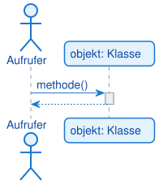 |
| Lebenslinie | Gestrichelte vertikale Linie | Zeigt die Existenz des Objekts über die Zeit | siehe oben |
| Aktivierungsbalken | Schmales Rechteck auf der Lebenslinie | Zeigt an, wann ein Objekt aktiv ist (Methode ausführt) | siehe oben |
| Synchrone Nachricht | Pfeil mit gefüllter Spitze (->) |
Sender wartet auf Antwort (blockierend) | 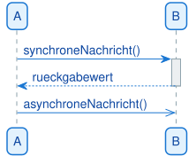 |
| Asynchrone Nachricht | Pfeil mit offener Spitze (->>) |
Sender wartet nicht auf Antwort ("Fire and Forget") | siehe oben |
| Rückgabenachricht | Gestrichelter Pfeil (-->) |
Rückgabewert einer synchronen Nachricht | siehe oben |
| Selbstaufruf | Pfeil zur eigenen Lebenslinie | Objekt ruft eigene Methode auf | 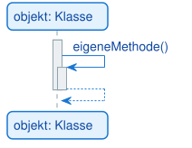 |
| Objekterzeugung | Pfeil mit <<create>> |
Erzeugt ein neues Objekt | 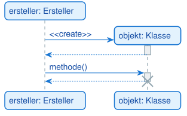 |
| Objektzerstörung | Großes X am Ende der Lebenslinie | Objekt wird zerstört | siehe oben |
| Fragment (alt) | Box mit "alt" | if-else-Verzweigung | 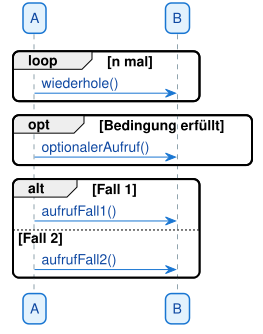 |
| Fragment (opt) | Box mit "opt" | Einfacher if-Block ohne else | siehe oben |
| Fragment (loop) | Box mit "loop" | Schleife | siehe oben |
| Fragment (break) | Box mit "break" | Bricht den umgebenden Ablauf ab | Fehler-/Abbruchbehandlung |
| Fragment (ref) | Box mit "ref" | Verweis auf ein ausgelagertes Diagramm | Wiederverwendung |
| Verlorene Nachricht | Pfeil endet an kleinem Kreis | Empfänger unbekannt/nicht modelliert | Ausschnitt eines größeren Ablaufs |
| Gefundene Nachricht | Pfeil beginnt an kleinem Kreis | Sender unbekannt/nicht modelliert | Externer Auslöser |
Hinweis: Die Pfeilspitze ist extrem wichtig! Eine gefüllte Spitze bedeutet synchron (blockierend), eine offene Spitze bedeutet asynchron (nicht blockierend).
2.2 Objekte, Lebenslinien und Aktivierungsbalken
Objekte/Teilnehmer:
- Stehen ganz oben als Rechtecke
- Können konkrete Objekte sein (z.B. kunde: Kunde)
- Können Systemkomponenten sein (z.B. Frontend, Backend, Datenbank)
- Können Akteure sein (z.B. Benutzer als Strichmännchen)
- Notation: objektname: Klassenname oder nur Klassenname
Lebenslinie: - Die gestrichelte Linie, die von jedem Objekt nach unten verläuft - Repräsentiert die Existenz des Objekts über die Zeit - Das Diagramm wird von oben nach unten gelesen (Zeit läuft nach unten)
Aktivierungsbalken: - Ein auf der Lebenslinie gezeichnetes, schmales Rechteck - Zeigt an, wann ein Objekt aktiv ist, d.h. wann es gerade eine Methode ausführt oder auf eine Antwort wartet - Analogie: Der Call Stack aus dem Debugger - Jeder neue Aktivierungsbalken ist wie ein neuer Eintrag auf dem Stack - Wenn eine Methode eine andere aufruft, wird ein neuer Balken auf den vorherigen gezeichnet - Wenn eine Methode zurückkehrt, endet der Balken

Was zeigt dieses Diagramm? - Drei Teilnehmer: Benutzer, UI, Controller - Lebenslinien für jeden Teilnehmer - Aktivierungsbalken zeigen, wann UI und Controller aktiv sind - Die Zeit läuft von oben nach unten
2.3 Nachrichten: Synchron vs. Asynchron
Nachrichten sind die Pfeile zwischen den Lebenslinien und repräsentieren Methodenaufrufe. Die Pfeilspitze ist extrem wichtig.
Synchrone Nachricht (gefüllte Pfeilspitze ->):
- Der Sender wartet auf eine Antwort und blockiert währenddessen
- Dies ist der Standardfall in den meisten Programmiersprachen (z.B. ein normaler Java-Methodenaufruf)
- Erfordert immer eine Rückgabenachricht (gestrichelter Pfeil -->)
- Beispiel: kunde.getAdresse() – der Aufrufer wartet, bis die Adresse zurückgegeben wird
Asynchrone Nachricht (offene Pfeilspitze ->>):
- Der Sender feuert die Nachricht ab und macht sofort weiter, ohne auf eine Antwort zu warten ("Fire and Forget")
- Beispiel: E-Mail senden, Event auslösen, Nachricht in eine Queue schreiben
- Keine Rückgabenachricht nötig
Rückgabenachricht (gestrichelter Pfeil -->):
- Zeigt den Rückgabewert einer synchronen Nachricht
- Optional: Kann weggelassen werden, wenn der Rückgabewert nicht wichtig ist
- Notation: return wert oder einfach wert
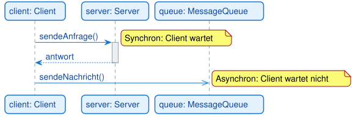
Warnung: Verwechseln Sie nicht synchrone und asynchrone Nachrichten! Die Pfeilspitze macht den Unterschied. In der Praxis sind die meisten Methodenaufrufe synchron.
2.4 Selbstaufrufe
Ein Selbstaufruf ist ein Pfeil, der von einer Lebenslinie zur selben Lebenslinie zurückkehrt. Er zeigt, dass ein Objekt eine eigene Methode aufruft.
Wann verwenden? - Wenn eine Methode eine andere Methode derselben Klasse aufruft - Wenn eine rekursive Methode sich selbst aufruft - Wenn interne Hilfsmethoden aufgerufen werden
Darstellung: - Ein zweiter, kleinerer Aktivierungsbalken wird auf dem ersten gezeichnet - Zeigt, dass das Objekt eine weitere Methode ausführt, während die erste noch aktiv ist
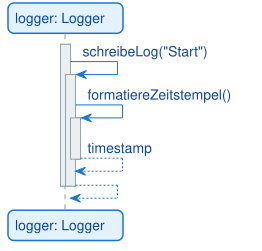
Was zeigt dieses Diagramm?
- schreibeLog() ruft intern formatiereZeitstempel() auf
- Beide Methoden gehören zur selben Klasse Logger
- Die Aktivierungsbalken zeigen die Verschachtelung (wie ein Call Stack)
Hinweis: Selbstaufrufe sind keine Rekursion im mathematischen Sinne, sondern einfach Methodenaufrufe innerhalb derselben Klasse. Sie zeigen interne Abläufe, die für das Verständnis wichtig sind.
2.5 Objekterzeugung und Objektzerstörung
Objekte müssen nicht von Anfang an existieren. Sie können während des Ablaufs erzeugt und auch wieder zerstört werden.
Objekterzeugung (<<<create>>
- Das Zielobjekt wird erst beim Empfang dieser Nachricht erzeugt
- Die Lebenslinie des neuen Objekts beginnt erst an diesem Punkt
- Beispiel: new Logger() in Java oder Logger() in Python
Objektzerstörung:
- Darstellung: Großes X am Ende der Lebenslinie
- Zeigt, dass das Objekt zerstört wird (z.B. durch delete in C++ oder Garbage Collection)
- In Python und Java meist nicht explizit nötig (Garbage Collector)
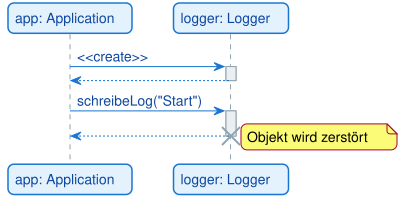
Was zeigt dieses Diagramm? - Die Application erzeugt ein Logger-Objekt - Das Logger-Objekt wird verwendet - Am Ende wird das Logger-Objekt zerstört
2.6 Fragmente: Kontrollstrukturen im Sequenzdiagramm
Fragmente sind Boxen, die um Teile des Diagramms gezeichnet werden, um Kontrollstrukturen wie Verzweigungen und Schleifen darzustellen.
alt (Alternative) – if-else-Verzweigung: - Die Box wird durch eine gestrichelte Linie in die verschiedenen Fälle unterteilt - Jeder Fall hat eine Bedingung in eckigen Klammern - Entspricht einer if-else-Struktur in der Programmierung
opt (Optional) – einfacher if-Block: - Für einen einfachen if-Block ohne else - Der Inhalt wird nur ausgeführt, wenn die Bedingung wahr ist
loop (Schleife): - Der Inhalt der Box wird wiederholt, solange die Bedingung zutrifft - Entspricht einer while-Schleife in der Programmierung
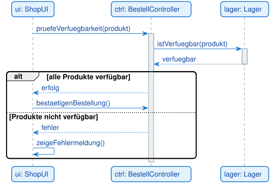
Was zeigt dieses Diagramm?
- Eine Verzweigung mit alt: Wenn alle Produkte verfügbar sind, wird die Bestellung bestätigt, sonst wird eine Fehlermeldung angezeigt
- Die gestrichelte Linie trennt die beiden Fälle
Tipp: Fragmente machen Sequenzdiagramme sehr mächtig, aber auch komplexer. Verwenden Sie sie nur, wenn die Kontrollstruktur für das Verständnis wichtig ist.
2.7 Weitere kombinierte Fragmente: break, ref und critical
Neben alt, opt, loop und par gibt es weitere kombinierte Fragmente, die in Prüfungen und in der Praxis vorkommen:
| Operator | Bedeutung |
|---|---|
break |
Bricht den umgebenden Ablauf ab (wie break in einer Schleife). Der Inhalt wird ausgeführt, danach wird das umgebende Fragment verlassen — typisch für Fehler-/Abbruchbehandlung. |
ref |
Verweist auf ein anderes, ausgelagertes Sequenzdiagramm. Statt einen komplexen Ablauf mehrfach zu zeichnen, lagert man ihn aus und referenziert ihn — die Wiederverwendung des Sequenzdiagramms. |
critical |
Kritischer Bereich, der nicht unterbrochen werden darf (z. B. bei parallelen Abläufen ein atomarer Abschnitt). |
Beispiel ref: Ein „Bestellprozess"-Diagramm enthält ein ref-Fragment „Anmeldung", das auf ein separates „Anmelde"-Sequenzdiagramm verweist — so bleibt das Hauptdiagramm übersichtlich.
Merksatz:
ref= „siehe anderes Diagramm" (Auslagerung),break= „hier abbrechen",critical= „nicht unterbrechen". Zusammen mitalt/opt/loop/pardecken sie die Kontrollstrukturen des Sequenzdiagramms ab.
2.8 Verlorene und gefundene Nachrichten
Manchmal ist der Sender oder Empfänger einer Nachricht nicht im Diagramm dargestellt — etwa, weil er außerhalb des betrachteten Ausschnitts liegt. Dafür gibt es zwei Sonderformen:
- Verlorene Nachricht (lost message): Der Pfeil geht von einer Lebenslinie aus, endet aber an einem kleinen ausgefüllten Kreis statt an einem Empfänger. Bedeutung: Die Nachricht wird gesendet, der Empfänger ist aber unbekannt oder nicht modelliert.
- Gefundene Nachricht (found message): Der Pfeil beginnt an einem kleinen ausgefüllten Kreis und trifft auf eine Lebenslinie. Bedeutung: Eine Nachricht kommt an, der Sender ist aber unbekannt oder nicht modelliert (z. B. ein externer Auslöser).
Hinweis: Verlorene und gefundene Nachrichten sind nützlich, wenn man bewusst nur einen Ausschnitt eines größeren Ablaufs zeigt, ohne alle beteiligten Objekte zu zeichnen.
3. Vollständiges Beispiel: Login-Prozess
3.1 Das Szenario
Wir modellieren einen Login-Prozess mit folgenden Beteiligten: - Benutzer: Gibt Benutzerdaten ein - LoginUI: Präsentationsschicht (Benutzerinteraktion) - LoginController: Logikschicht (Geschäftslogik) - Database: Datenschicht (Datenverwaltung)
3.2 Der Prozessablauf
- Benutzer gibt Benutzerdaten ein
- UI ruft
login()des Controllers auf - Controller ruft
pruefeAnmeldedaten()der Datenbank auf - Datenbank gibt
trueoderfalsezurück - Controller gibt "erfolg" oder "fehler" zurück
- UI zeigt entsprechende Nachricht
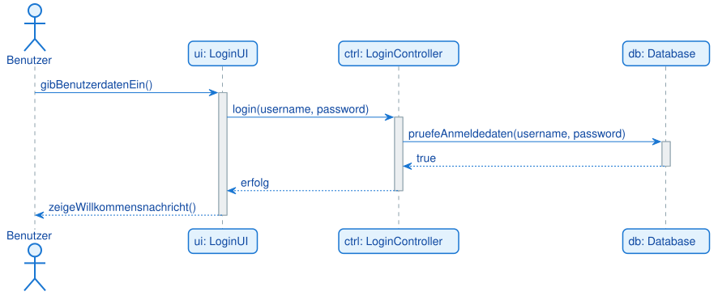
3.3 Was zeigt dieses Diagramm?
Drei-Schichten-Architektur: - Klare Trennung zwischen UI, Logik und Daten - Jede Schicht kennt nur die direkt darunter liegende Schicht
Zeitliche Abfolge: - Von oben nach unten: Benutzer → UI → Controller → Datenbank - Rückgabewerte: Datenbank → Controller → UI → Benutzer
Aktivierungsbalken: - Zeigen, wann welches Objekt aktiv ist - UI ist aktiv, während Controller arbeitet - Controller ist aktiv, während Datenbank arbeitet
Synchrone Kommunikation: - Alle Nachrichten sind synchron (gefüllte Pfeilspitzen) - Jeder Aufrufer wartet auf die Antwort
4. Komplexeres Beispiel: Bestellprozess mit Bedingungen
4.1 Das Szenario
Wir modellieren einen Bestellprozess mit folgenden Beteiligten: - Kunde: Bestellt Produkte - ShopUI: Präsentationsschicht - BestellController: Logikschicht - Lager: Lagerverwaltung - Zahlungssystem: Zahlungsabwicklung
4.2 Der Prozessablauf
- Kunde bestellt Produkte
- UI prüft Verfügbarkeit für jedes Produkt (Schleife)
- Entscheidung: Alle Produkte verfügbar? - Ja: Bestellung bestätigen, Zahlung verarbeiten, Produkte reservieren - Nein: Fehlermeldung anzeigen
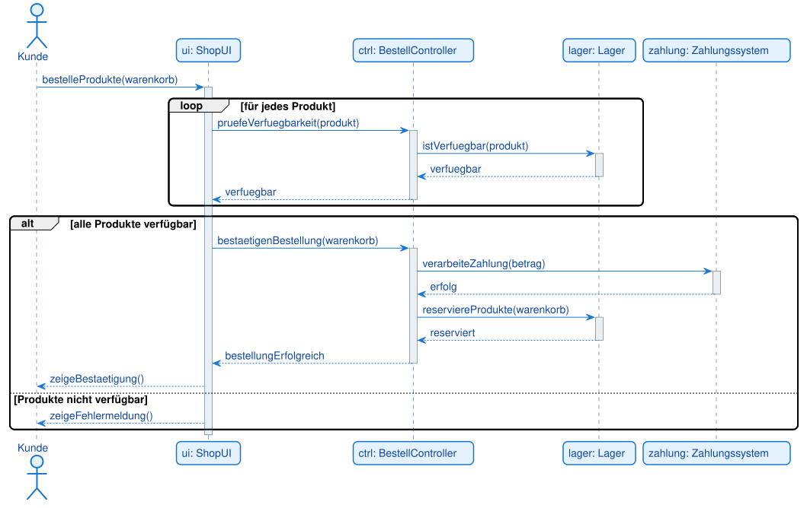
4.3 Was zeigt dieses Diagramm?
Schleife (loop):
- Für jedes Produkt im Warenkorb wird die Verfügbarkeit geprüft
- Entspricht einer for-Schleife in der Programmierung
Verzweigung (alt/else): - Wenn alle Produkte verfügbar sind, wird die Bestellung bestätigt - Sonst wird eine Fehlermeldung angezeigt
Komplexe Interaktion: - Mehrere Objekte sind beteiligt (UI, Controller, Lager, Zahlungssystem) - Die Reihenfolge ist klar: Erst Verfügbarkeit prüfen, dann Zahlung, dann Reservierung
Transaktionale Logik: - Die Schritte müssen in dieser Reihenfolge erfolgen - Wenn die Zahlung fehlschlägt, dürfen keine Produkte reserviert werden
Warnung: In echten Systemen müssen Transaktionen atomar sein: Wenn die Zahlung fehlschlägt, dürfen keine Produkte reserviert werden. Sequenzdiagramme helfen, solche kritischen Abläufe zu planen.
5. Objekterzeugung und Selbstaufrufe in der Praxis
5.1 Das Szenario
Wir modellieren eine Anwendung, die beim Start ein Logger-Objekt erzeugt und verwendet:
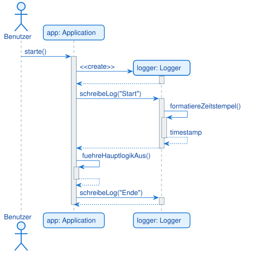
5.2 Was zeigt dieses Diagramm?
Objekterzeugung:
- Die Application erzeugt ein Logger-Objekt mit <<create>>
- Die Lebenslinie des Loggers beginnt erst an diesem Punkt
Selbstaufrufe:
- formatiereZeitstempel() wird von schreibeLog() aufgerufen (innerhalb derselben Klasse)
- fuehreHauptlogikAus() wird von starte() aufgerufen (innerhalb derselben Klasse)
Aktivierungsbalken bei Selbstaufrufen: - Ein zweiter, kleinerer Aktivierungsbalken wird auf dem ersten gezeichnet - Zeigt die Verschachtelung (wie ein Call Stack)
6. Praktische Tipps für gute Sequenzdiagramme
6.1 Halte es übersichtlich
Problem: Zu viele Objekte, zu viele Nachrichten, zu viele Fragmente.
Lösung: - Fokussiere auf den Hauptablauf - Lagere Teilabläufe in separate Diagramme aus - Verwende maximal 5-7 Objekte pro Diagramm - Begrenze die Anzahl der Nachrichten auf 15-20
6.2 Verwende klare Benennungen
Objekte:
- Gut: kunde: Kunde, ui: LoginUI, db: Database
- Schlecht: obj1, obj2, system
Nachrichten:
- Gut: login(username, password), pruefeAnmeldedaten(), sendeEmail()
- Schlecht: methode1(), aufruf(), verarbeite()
6.3 Prüfe die Logik
Synchrone Nachrichten: - Jede synchrone Nachricht braucht eine Rückgabenachricht (optional, aber empfohlen) - Der Sender wartet auf die Antwort
Asynchrone Nachrichten: - Keine Rückgabenachricht nötig - Der Sender macht sofort weiter
Fragmente:
- Bedingungen müssen klar formuliert sein
- Alle Fälle müssen abgedeckt sein (bei alt)
6.4 Nutze Fragmente sinnvoll
Wann Fragmente? - Bei Verzweigungen (if-else) - Bei Schleifen (for, while) - Bei optionalen Abläufen (if ohne else)
Wann keine Fragmente? - Bei einfachen, linearen Abläufen - Wenn die Kontrollstruktur nicht wichtig ist - Wenn das Diagramm dadurch zu komplex wird
6.5 Dokumentiere das Diagramm
Ein Sequenzdiagramm ist nur der Überblick. Ergänze es durch: - Textbeschreibungen der Nachrichten - Erklärungen der Bedingungen - Hinweise auf Ausnahmefälle - Verweise auf Use Cases oder Anforderungen
7. Sequenzdiagramme vs. andere UML-Diagramme
7.1 Sequenzdiagramm vs. Klassendiagramm
| Aspekt | Klassendiagramm | Sequenzdiagramm |
|---|---|---|
| Sicht | Statische Struktur | Dynamisches Verhalten |
| Zeigt | Klassen, Attribute, Methoden | Objekte, Nachrichten, zeitliche Abfolge |
| Frage | "Was existiert?" | "Wer spricht wann mit wem?" |
| Verwendung | Systemarchitektur, Datenmodell | Interaktionen, Abläufe |
7.2 Sequenzdiagramm vs. Aktivitätsdiagramm
| Aspekt | Aktivitätsdiagramm | Sequenzdiagramm |
|---|---|---|
| Fokus | Kontrollfluss, Prozesse | Objektinteraktionen |
| Zeigt | Aktionen, Entscheidungen, Parallelität | Nachrichten, zeitliche Abfolge |
| Frage | "Was passiert wann?" | "Wer spricht wann mit wem?" |
| Verwendung | Geschäftsprozesse, Algorithmen | Objektkommunikation |
Merksatz: Aktivitätsdiagramme zeigen den Kontrollfluss (was passiert wann), Sequenzdiagramme zeigen den Nachrichtenfluss (wer spricht wann mit wem).
8. Vom Sequenzdiagramm zum Code
Ein Sequenzdiagramm zeigt Methodenaufrufe zwischen Objekten über die Zeit — jede Nachricht ist ein Aufruf:
| Diagramm-Element | Umsetzung im Code (Java) |
|---|---|
| Lebenslinie / Objekt | Objekt einer Klasse |
| Synchrone Nachricht | Methodenaufruf objekt.methode(...) |
| Rückgabenachricht | return-Wert des Aufrufs |
| Selbstaufruf | Aufruf einer eigenen Methode (this.methode()) |
Objekterzeugung «create» |
new Klasse(...) |
| alt / opt | if / else |
| loop | for / while |
| par | parallele Threads |
Merksatz: Jeder Pfeil ist ein Methodenaufruf; die Reihenfolge von oben nach unten ist die Aufrufreihenfolge.
Typische Fehler
- Synchron / asynchron / Rückgabe verwechselt — gefüllte Spitze (synchron), offene Spitze (asynchron), gestrichelt (Rückgabe). Folge: falsche Aussage über das Blockieren. Die Pfeilart ist entscheidend.
- Aktivierungsbalken fehlen oder falsch — Folge: unklar, wann ein Objekt aktiv ist. Der Balken beginnt beim Empfang und endet bei der Rückgabe.
- Zeitliche Reihenfolge missachtet — Nachrichten nicht streng von oben nach unten. Folge: der zeitliche Ablauf stimmt nicht.
- Rückgabepfeil vergessen — nach einer synchronen Nachricht fehlt die Antwort. Folge: unvollständige Interaktion.
- Fragment ohne Bedingung —
alt/loopohne[Bedingung]. Folge: Verzweigung bzw. Schleife nicht nachvollziehbar.
9. Zusammenfassung
9.1 Kernkonzepte
Sequenzdiagramm: - Visualisiert den dynamischen Austausch von Nachrichten zwischen Objekten über die Zeit - Zeigt, wer wann mit wem spricht - Ist das wichtigste Verhaltensdiagramm der UML
Notationselemente:
- Objekt/Teilnehmer: Rechteck am oberen Rand
- Lebenslinie: Gestrichelte vertikale Linie (Existenz über die Zeit)
- Aktivierungsbalken: Schmales Rechteck (Objekt ist aktiv)
- Synchrone Nachricht: Gefüllte Pfeilspitze (Sender wartet)
- Asynchrone Nachricht: Offene Pfeilspitze (Sender wartet nicht)
- Rückgabenachricht: Gestrichelter Pfeil
- Selbstaufruf: Pfeil zur eigenen Lebenslinie
- Objekterzeugung: <<create>>
- Objektzerstörung: Großes X
- Fragmente: alt (if-else), opt (if), loop (Schleife)
Verwendung: - Modellierung: Vor der Implementierung planen - Dokumentation: Nach der Implementierung dokumentieren (häufiger) - Use Cases detaillieren - Systemarchitektur dokumentieren - Fehlersuche und Debugging
9.2 Praktische Faustregeln
-
Beginne mit den Hauptobjekten - Welche Objekte sind beteiligt? - Welche Systemkomponenten kommunizieren?
-
Identifiziere die Nachrichten - Welche Methodenaufrufe werden gemacht? - In welcher Reihenfolge?
-
Unterscheide synchron und asynchron - Wartet der Sender auf eine Antwort? → Synchron (gefüllte Pfeilspitze) - Macht der Sender sofort weiter? → Asynchron (offene Pfeilspitze)
-
Nutze Fragmente bei Bedarf - Verzweigungen:
alt- Optionale Abläufe:opt- Schleifen:loop -
Halte es einfach - Nicht jedes Detail muss im Diagramm sein - Fokus auf den Hauptablauf - Lagere Teilabläufe aus
9.3 Wichtige Erkenntnisse
- Sequenzdiagramme sind Werkzeuge zur Planung und Kommunikation
- Sie sind die Brücke zwischen Klassendiagrammen und Code
- Die Pfeilspitze ist extrem wichtig (synchron vs. asynchron)
- Aktivierungsbalken zeigen die Verschachtelung (wie ein Call Stack)
- In der IHK-Prüfung sind Sequenzdiagramme extrem relevant
Merksatz: Ein Sequenzdiagramm ist wie ein Theaterstück: Die Akteure stehen oben, die Zeit läuft von oben nach unten, und die Dialoge (Nachrichten) zeigen, wer wann mit wem spricht.
Glossar
| Begriff | Kurzerklärung |
|---|---|
| Sequenzdiagramm (Sequence Diagram) | UML-Verhaltensdiagramm, das den zeitlichen Austausch von Nachrichten zwischen Objekten darstellt |
| Teilnehmer/Objekt (Participant) | Ein an der Interaktion beteiligtes Objekt, eine Systemkomponente oder ein Akteur, dargestellt als Rechteck am oberen Rand |
| Akteur (Actor) | Eine Person oder ein System außerhalb des betrachteten Systems, dargestellt als Strichmännchen |
| Lebenslinie (Lifeline) | Die gestrichelte vertikale Linie unter einem Teilnehmer, die dessen Existenz über die Zeit zeigt |
| Aktivierungsbalken (Activation Bar / Execution Specification) | Schmales Rechteck auf der Lebenslinie, das anzeigt, wann ein Objekt aktiv eine Methode ausführt |
| Nachricht (Message) | Ein Pfeil zwischen zwei Lebenslinien, der einen Methodenaufruf oder Datenaustausch repräsentiert |
| Synchrone Nachricht (Synchronous Message) | Nachricht mit gefüllter Pfeilspitze (->); der Sender wartet blockierend auf eine Antwort |
| Asynchrone Nachricht (Asynchronous Message) | Nachricht mit offener Pfeilspitze (->>); der Sender wartet nicht auf eine Antwort ("Fire and Forget") |
| Rückgabenachricht (Return Message) | Gestrichelter Pfeil (-->), der den Rückgabewert einer synchronen Nachricht zeigt |
| Selbstaufruf (Self-Message) | Nachricht, die ein Objekt an seine eigene Lebenslinie sendet (Aufruf einer eigenen Methode) |
| Objekterzeugung (Object Creation) | Nachricht mit dem Stereotyp <<create>>, die ein neues Objekt zur Laufzeit erzeugt |
| Objektzerstörung (Object Destruction) | Großes X am Ende einer Lebenslinie; zeigt, dass das Objekt zerstört wird |
| Fragment (Combined Fragment) | Eine Box um einen Teil des Diagramms, die eine Kontrollstruktur wie alt, opt oder loop darstellt |
| alt (Alternative) | Fragment für eine if-else-Verzweigung mit mehreren sich ausschließenden Fällen |
| opt (Optional) | Fragment für einen einfachen if-Block ohne else-Zweig |
| loop | Fragment für eine Schleife (wiederholte Ausführung) |
| par (Parallel) | Fragment für parallel bzw. nebenläufig ablaufende Interaktionen |
| break | Fragment, das den umgebenden Ablauf abbricht (z. B. bei Fehlerbehandlung) |
| ref (Reference) | Verweis auf ein ausgelagertes Sequenzdiagramm zur Wiederverwendung |
| critical | Kritischer, nicht unterbrechbarer Bereich innerhalb einer Interaktion |
| Verlorene Nachricht (Lost Message) | Nachricht mit unbekanntem Empfänger; Pfeil endet an einem kleinen ausgefüllten Kreis |
| Gefundene Nachricht (Found Message) | Nachricht mit unbekanntem Sender; Pfeil beginnt an einem kleinen ausgefüllten Kreis |
| Call Stack | Analogie aus der Programmierung: der Stapel aktiver Methodenaufrufe, vergleichbar mit verschachtelten Aktivierungsbalken |
| Drei-Schichten-Architektur | Aufteilung einer Anwendung in Präsentationsschicht (UI), Logikschicht (Controller) und Datenschicht (Database) |
| Modellierung | Einsatz des Sequenzdiagramms vor der Implementierung, um eine Interaktion zu planen |
| Dokumentation | Einsatz des Sequenzdiagramms nach der Implementierung, um eine bestehende Interaktion zu beschreiben |